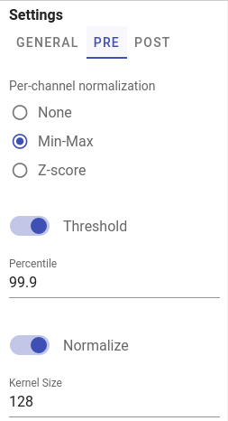

Datasets
Datasets combine segmentation masks and single-cell measurements (mean cell intensities and centroids coordinates). There are several ways to acquire datasets in histoCAT Web: one can import an output of separate IMC pipeline processing or generate cell-specific data by running DeepCell deep-learning segmentation algorithm.
As soon as dataset is ready, user can analyse single-cell data, e.g., perform dimensionality reduction, run cluster analysis, etc.
histoCAT Web stores raw datasets and its processed analysis sub-sets in AnnData file format, see details at https://anndata.readthedocs.io. You can download these AnnData files by clicking Download button in dataset view:

There are other commands available for each dataset as well: Rename and Delete.
When you select dataset from the list, cell masks will become available for visualization in Image view. Acquisitions that have available mask information will be marked by the mask icon:
When such acquisition with the mask icon selected in the Slides view, then Mask overlay button will be enabled so one can switch it on to see according mask overlay in the Blend image view:

Warning
Don't forget: dataset should be selected in order to see mask overlay or start data analysis pipeline!
Importing datasets
In order to import existing dataset, please click UPLOAD DATASET menu and select a proper option:
Info
Processing of the uploaded dataset files can take some time. As soon as processing is complete, dataset name will appear in Datasets list and popup notification message will be displayed.
At the time of writing, four dataset import options are available. Let's describe each option separately.
steinbock
histoCAT Web is able to import a zipped output of steinbock multi-channel image processing framework.
Warning
Please keep in mind, that directory structure may differ if user provided custom names when running steinbock pipeline.
File upload dialog gives an option to define custom directory names when importing steinbock datasets:

ImcSegmentationPipelineV1
ImcSegmentationPipeline: A flexible image segmentation pipeline for heterogeneous multiplexed tissue images based on pixel classification. For more details please see https://github.com/BodenmillerGroup/ImcSegmentationPipeline
Before uploading dataset to histoCAT, there are some additional steps users need to do. Output of the ImcSegmentationPipeline should contain the folder called cpout (i.e. CellProfiler output). Here is an example of a content in such folders:

By default, this folder misses one important piece - channel order information. The easiest way to fix it at the moment is to manually copy a single file with channel order information from another folder, which is tiffs folder with the content similar to the following:

You may see there several CSV files with _ac_full.csv suffix. Just copy one of these files into cpout folder. This file will be used by histoCAT to find out about channel order information when you upload dataset. In order to upload the dataset, please create a ZIP archive of the before-mentioned cpout folder (with included _ac_full.csv file) and then upload it to histoCAT.
ImcSegmentationPipelineV2
ImcSegmentationPipeline v2 has some changes in the output format. For details, please see official changelog.
Zip file content should have the following folder structure:
DeepCell segmentation
DeepCell is a deep learning library for single-cell analysis of biological images. Pre-trained DeepCell Mesmer model used for cell/nuclei segmentation from raw image data.
Note
Super-admin users can upload new models in addition to a default DeepCell Mesmer model.
Automatic DeepCell segmentation in histoCAT Web will create grayscale cell/nuclear masks of the same x and y dimensions as the original images, containing unique pixel values for each cell/nucleus. Mean cell intensities and cell centroid coordinates measured as well.
Note
Depending on the application, DeepCell requires images of specific dimensions. For example, in the case of cell segmentation using Mesmer, DeepCell expects two-channel images as input, where the first channel must be a nuclear channel (e.g., DAPI) and the second channel must be a membrane or cytoplasmic channel (e.g., E-Cadherin).
To run DeepCell segmentation, please follow these steps:
- Switch to
Segmentationpanel in Project workspace. - Select acquisitions which should be analysed in order to acquire their segmentation masks and to measure cell-specific data. Channels panel will be populated with metal channels of the selected acquisitions.
- Select channels of two types: nuclear and cytoplasm channels. If multiple channels of the same type selected, they will be merged into a two-channel image, compatible with DeepCell Mesmer input format. Channels that do have type
Noneare excluded from segmentation. - In
GENERALtab at the right part of theSegmentationpanel select a model, type of segmentation (whole-cell or nuclear), and give a proper name and description for dataset that will be generated. - Adjust DeepCell pre- and post- processing settings if needed (these settings located in
PREandPOSTtabs). For details see DeepCell settings - When ready, click
SUBMITbutton to start segmentation processing on the server side.
Pre-processing settings

Channel-wise image normalization
If Min-Max or Z-score per-channel normalization enabled in PRE tab, channels intensities are scaled for each channel independently before merging them into two-channel input image.
Post-processing settings